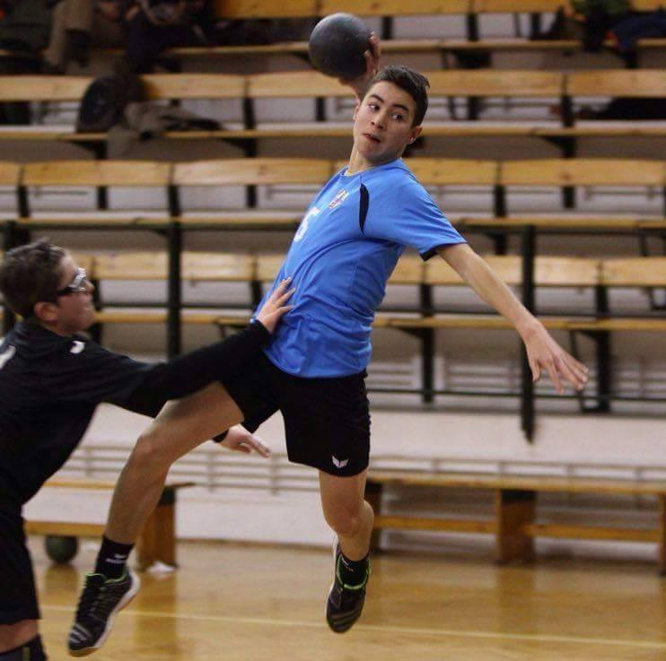
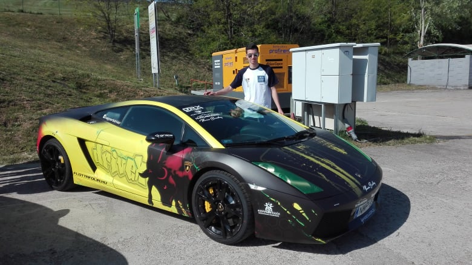

Márkus Jánosnak hívnak és Gyömrőn élek. Jelenleg Budapesten tanulok a Műszaki Egyetemen gépészmérnöknek.
Kisgyerekkorom óta nagy szerelmese vagyok a sportnak. Idén már 11. éve kézilabdázom. Gépészmérnöki tanulmányaimhoz azonban nagybátyjám vezetett el, aki egyszer kivitt a Hungaroringre és ott kezdődött el az újabb szerelem. AZ AUTÓK.
Rengeteg - akkor még amatőrebb fotót készítettem a versenygépekről - azóta ez már hobbivá fejlődött és ezen portfóliómban is erről adok tanúbizonyságot.
